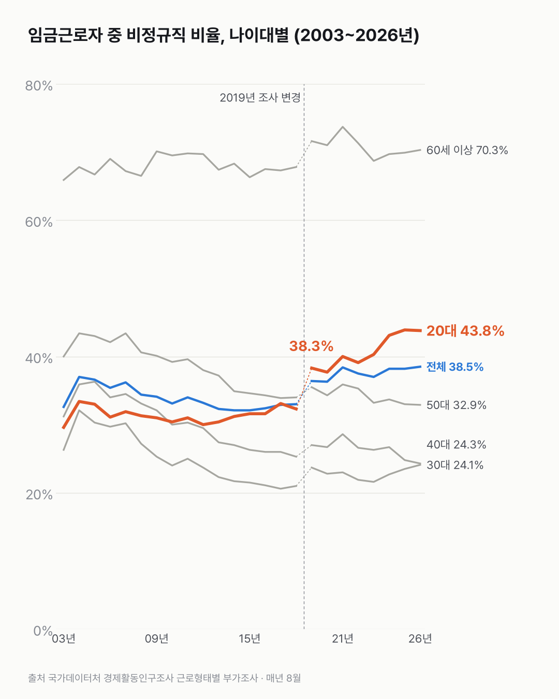
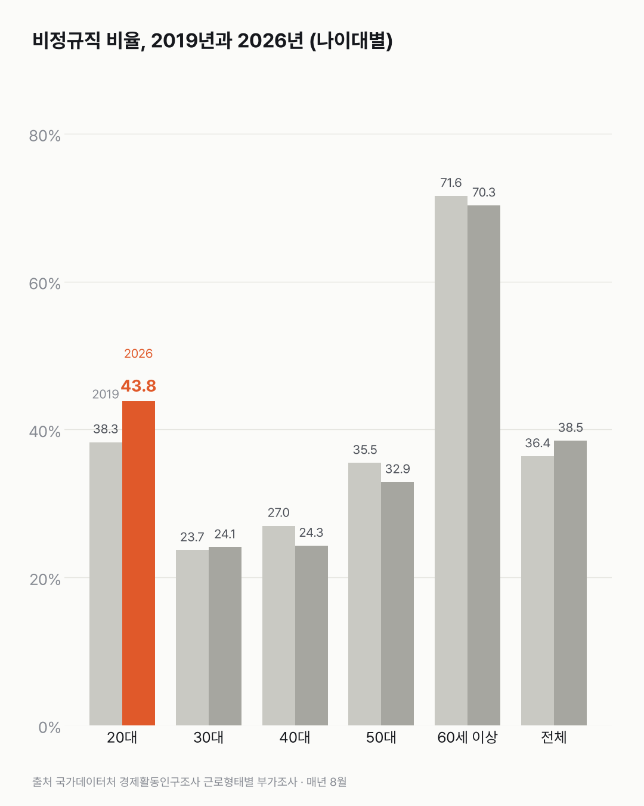

20대 비정규직 비율은 올랐는데, 비정규직 수는 그대로예요
20대 비정규직 비율이 오른 건 정규직이 줄어든 데서 나왔어요. 비정규직 수는 거의 그대로예요.

- 2019~2026년 20대 비정규직 비율은 38.3%에서 43.8%로, 나이대 중 가장 많이 올랐어요(매년 8월).
- 같은 기간 20대 비정규직은 136.2만 명에서 134.3만 명으로 비슷하고, 정규직은 219.4만 명에서 172.5만 명으로 줄었어요.
- 60세 이상은 70.3%가 비정규직이에요. 전체 비정규직 비율은 38.5%로 역대 최대예요.
옛 조사 방식으로 재던 2003~2018년엔 20대 비율이 30~33% 사이에서 크게 움직이지 않았어요. 같은 시기 30대는 26.3%에서 21.0%로, 40대는 31.2%에서 25.3%로 내려갔어요. 그러다 조사가 바뀌면서 기간제 근로자를 더 잡아내게 됐어요. 그래서 그 앞뒤는 잇지 않고 따로 봤어요.
바뀐 기준 안에서는 20대가 가장 많이 올랐어요. 38.3%에서 43.8%로 5.5%p예요. 30대는 23.7%에서 24.1%로 조금 올랐고, 40대(27.0 → 24.3%), 50대(35.5 → 32.9%), 60세 이상(71.6 → 70.3%)은 내려갔어요.
사람 수로 다시 세어 봤어요. 20대 임금근로자는 355.5만 명(2019)에서 306.8만 명(2026)으로 줄었어요. 이 중 비정규직은 136.2만 명에서 134.3만 명으로 거의 같은데, 정규직이 219.4만 명에서 172.5만 명으로 줄었어요. 비율을 움직인 건 정규직 쪽이었어요.
전체 비율은 36.4%에서 38.5%로 올라 역대 최대예요. 나이대마다 대체로 내려갔는데 전체가 오른 데엔 나이 구성이 섞여 보여요. 비정규직 비율이 높은 60세 이상이 임금근로자에서 차지하는 비중이 13.2%에서 20.1%로 커졌거든요.
60세 이상은 열에 일곱이 비정규직이에요. 2003~2018년에도 66~70%였고, 2019년 이후엔 69~74%예요.


20대 정규직이 47만 명 가까이 줄어든 7년이었어요. 20대 인구가 줄어든 만큼인지, 그보다 더한지는 이 표 하나로 나눠지지 않았어요.
이 숫자는 어디서 왔나요
출처
기준일 2003~2026년, 매년 8월이에요.
국가데이터처경제활동인구조사 근로형태별 부가조사
- 성/연령별 근로형태(비정규직)별 취업자KOSIS DT_1DE7006S원본 보기
나이대별 임금근로자·정규직·비정규직, 매년 8월 2003~2026년
어떻게 셌나요
- 비정규직 비율은 비정규직을 임금근로자(월급 받는 사람) 전체로 나눈 값이에요.
- 비정규직은 한시적(기간제 포함)·시간제·비전형 근로자예요(노사정위원회 2002년 합의 정의). 비전형은 파견·용역·특수형태·가정 내·일일 근로자예요. 한 사람이 여러 유형에 해당할 수 있어요.
- 2019년부터 조사가 바뀌었어요. 기간제 근로자를 더 잡아내게 되면서 비정규직이 늘어난 것처럼 보여요. 그래서 2018년 이전과 2019년 이후를 따로 비교했고, 2018→2019년 변화는 해석하지 않았어요.
- 15~19세는 표본 오차가 커서 쓰지 않았어요.
한계 6가지
이 데이터로 말할 수 없는 것
- 조사가 2019년에 바뀌었어요. 2003년과 2026년을 바로 비교할 수는 없어요.
- 비정규직이 모두 원하지 않는 일자리는 아니에요. 시간제를 스스로 고른 경우도 있어요. 이 표로는 스스로 골랐는지 알 수 없어요.
- 8월 한 달 기준이에요. 계절에 따라 다를 수 있어요.
- '나이 구성 변화로 보인다'는 건 해석이에요. 정확히 나누려면 나이대별 가중 분해가 필요해요(이 글에서는 비중만 확인했어요).
- 20대 인구 자체가 줄고 있어요. 정규직 수 감소에는 인구 감소가 섞여 있어요(앞선 '쉬었음' 글 참고).
- 원인과 좋고 나쁨은 판단하지 않아요.
새 글 나오면 받아 보기
피드 리더 앱에 이 사이트 주소를 한 번 넣어 두면, 새 글이 올라올 때 앱에 떠요. 가입이나 메일 주소는 필요 없어요.
받는 법 보기
- 피드 리더 앱을 하나 골라요. 새 글을 모아 보여 주는 앱이에요. 예를 들면 Feedly나 Inoreader가 있어요. 둘 다 무료고 웹·휴대폰에서 써요.
- 앱에서 '구독 추가'(+)를 누르고 아래 주소를 붙여 넣어요.
- 끝이에요. 새 글이 올라오면 앱 목록에 떠요.
https://protofu.github.io/opendata-insight/feed.xmlFeedly를 쓴다면 여기를 눌러 바로 추가할 수도 있어요.